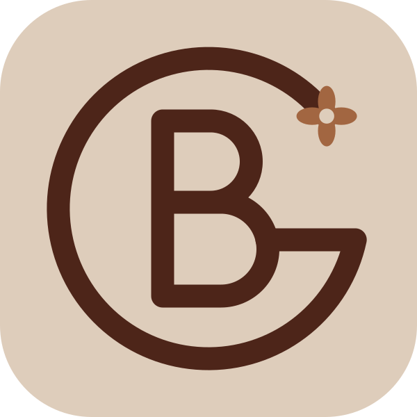

Binetou IA
En ligne · français et anglais
Bonjour ! Je suis l'assistante IA de Binetou. Posez-moi vos questions sur son profil, ses projets ou sa disponibilité.
Parle-moi de Sen Suivi
Sen Suivi est la startup fondée par Binetou : une plateforme web et mobile de prévention, de suivi et d'orientation pour le bien-être mental au Sénégal. Journal d'humeur, test de stress, Titou (assistant IA d'écoute) et professionnels vérifiés. Stack : Django, Angular, FastAPI.